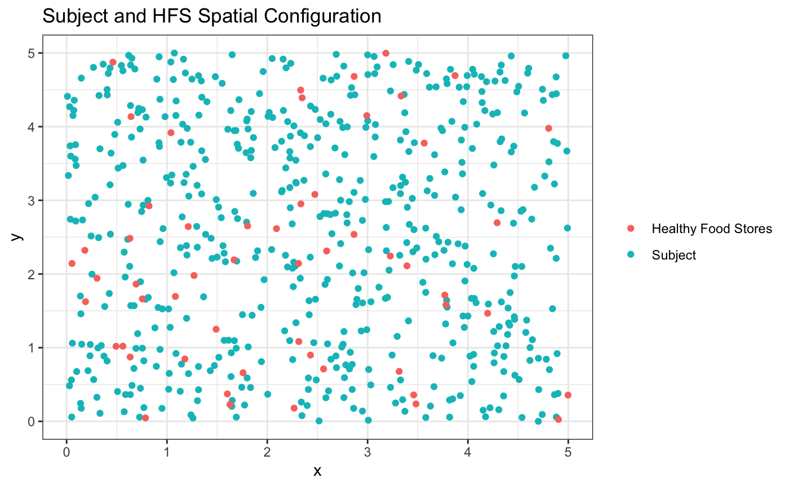
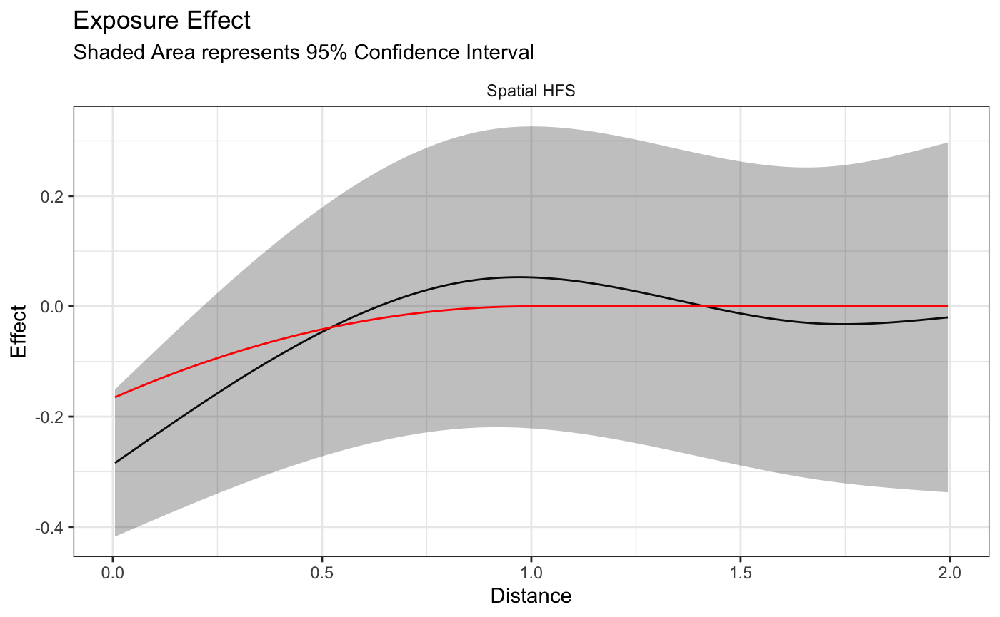
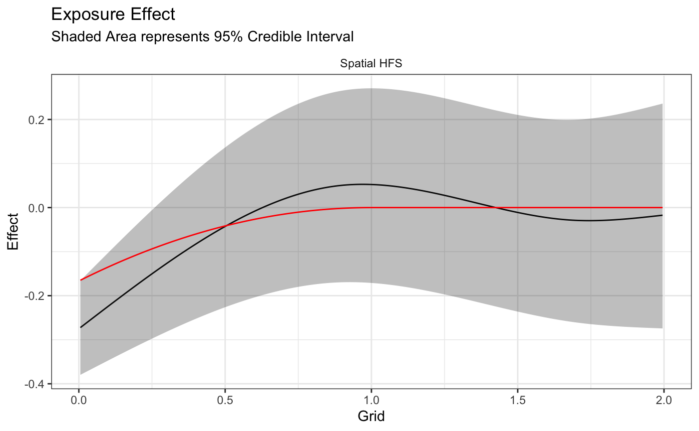

Introduction
Introduction.Rmdlibrary(bbnet)
library(tidyverse)
#> ── Attaching packages ──────────────────────────────────────────────────────────────────────────────────────────────────────────── tidyverse 1.2.1 ──
#> ✓ ggplot2 3.2.1 ✓ purrr 0.3.3
#> ✓ tibble 2.1.3 ✓ dplyr 0.8.3
#> ✓ tidyr 1.0.0 ✓ stringr 1.4.0
#> ✓ readr 1.3.1 ✓ forcats 0.4.0
#> ── Conflicts ─────────────────────────────────────────────────────────────────────────────────────────────────────────────── tidyverse_conflicts() ──
#> x dplyr::filter() masks stats::filter()
#> x dplyr::lag() masks stats::lag()
theme_set(theme_bw())
data("bbnet_demo")Introduction and Motivation
The rstap package introduced Spatial Temporal Aggregated Predictor or STAP models, as a method by which the effect of Built Environment Features (BEFs) measured as a point pattern could be incorporated into pre-existing regression methods. The bbnet package builds on this framework by modifying the way in which the spatial temporal exposure effect is estimated and allows for incorporation of between BEF distances as a potential component of the model. The former allows for faster estimation of the spatio-temporal exposure effect while the latter identifies an how the BEF effect could be augmented or dampened by being near other BEFs of similar or different types.
Model Specification
Restricting our attention to only spatial exposure for the following illustrative example, the spatial aggregated predictor was modeled in the following manner in rstap:
\[ E[Y_i] = Z_i^{T}\delta + \beta X_i(\theta) \tag{1}\\ X_i(\theta) = \sum_{d \in \mathcal{D}_i} \mathcal{K}_s(d,\theta) \] While continuous outcome \(Y_i\), and covariates \(Z_i\) for subject \(i=1,...,n\) are identified from a typical regression model, the covariate \(X_i(\theta)\) novelly represented the \(i\)th subject’s cumulative exposure across space. This was accomplished by incorporating distances, \(d\) through a spatial exposure function \(\mathcal{K}_s(d,\theta)\) - typically some exponential decay function, like \(\exp(-\frac{d}{\theta})\) or \(\exp(-(\frac{d}{\theta})^{\eta})\). Unfortunately, estimating this model through typical methods (e.g. MCMC) requires numerous evaluations of the kernel function summed across the, again typically numerous, distances in the set \(\mathcal{D}_i\), of subject-BEF distances.
To remedy this situation, the bbnet package adopts a regression spline basis representation, \(\phi(d)\), of the spatial exposure effect, removing the kernel and allowing for estimation on a sum of the function of the distances:
\[ E[Y_i] = Z_i^{T}\delta + \sum_{d \in \mathcal{D}_i}\beta_0 + \sum_{j=1}^{J}\beta_j\phi_j(d)\\ E[Y_i] = Z_i^{T}\delta + \beta_0 |\mathcal{D}_i| + \sum_{j=1}^{J}\sum_{d \in \mathcal{D}_i}\beta_j\phi_j(d) \tag{2} \]
In the above, \(|\mathcal{D}_i|\) is the size of the set of pairwise distances between subject \(i\) and the (in this example only one) class of BEFs. \(\beta_0\) can then be interpreted as the effect of a single BEF placed at distance 0 from the subject - analagous to \(\beta\) in (1) . Since the size of this set and the sum across distances, \(\sum_{d\in \mathcal{D}_i} \phi_j(d)\) can be done prior to model fitting, standard methods (e.g. stan_lm for bayesians or lm for frequentists) can be used, dramatically decreasing computational complexity.
We’ll now demonstrate this model specification as implimented in the bbnet package using simulated data that only considers the direct effect of distances between subjects and proximal BEFs, saving the previously mentioned distances between BEFs for another vignette.
Simulated Data, Distance Calculation
First we’ll simulate subject and “Healthy Food Stores” (HFS) uniformly across a hypothetical 5x5 square. The importance of using such a large space being that we’ll want to restrict the number of businesses included in our final calculation to ensure that there are a different number for each subject. This is equivalent to having \(|\mathcal{D}_i| \neq |\mathcal{D}_{i'}|\) for some \(i'\) - an important identifiability condition for estimating \(\beta_0\).

We’ll calculate the distances between the HFS’ and subjects to create a long dataframe, like the following, for our eventual model fitting.
| subj_id | BEF | Distance |
|---|---|---|
| 1 | HFS | 1.4643367 |
| 2 | HFS | 3.3501397 |
| 3 | HFS | 3.5854736 |
| 4 | HFS | 3.1157737 |
| 5 | HFS | 1.0199775 |
| 6 | HFS | 0.9285362 |
Next, in order to simulate the outcome of interest, we’ll need to express the effect of HFS’ as a function of distance from the subject. We’ll imagine that the outcome, \(Y_i\) is something like BMI and HFS’ decrease the BMI on average for those who live close, but does not affect those who live further away, as shown below: 
We’ll finish our simulation of the data by including a 0-1 sex covariate to make things a little more realistic - the code containing all the simulation details can be found here, and the resulting dataframe will look like the following.
| subj_id | y | sex |
|---|---|---|
| 1 | 24.38319 | F |
| 2 | 26.01655 | F |
| 3 | 24.25356 | M |
| 4 | 25.37887 | F |
| 5 | 25.20847 | F |
| 6 | 26.26159 | F |
Before we fit the model we’ll want to choose some restriction distance. While here we are only using this restriction to ensure the identifiability condition is met, this restriction is neccessary in a real world setting, since the number of businesses typically grows quadratically as a function of distance.
We’ll choose an arbitrary restriction distance of 2 and create knots for our basis functions based on the quantiles of the distance distribution within the restriction (note that this is an assumption of the model).
restricted_distance <- bbnet_demo$direct_distance_data %>% filter(Distance<=2)
demo_knots <- quantile(restricted_distance$Distance,
probs = c(0.25,.75))Finally we’ll fit our model, using syntax similar to the lm and stap_lm functions, where the ~ sap(HFS) indicates that we’re looking to model the healthy food stores as a function of space. Note that we have to define a list of basis functions for each covariate included in the model. We’ll use natural cubic splines here, with the interior knots previously defined at the quantiles and set the boundary knot at our inclusion distance. There are a few other arguments that are needed to ensure that the subject and bef data are joined and aggregated appropriately. While they are hopefully self-explanatory, more information about these can be found in the documentation if needed.
fit <- bnet_lm(formula = y ~ sex,
stap_formula = ~ sap(HFS),
subject_data = bbnet_demo$subject_data,
subject_id = "subj_id",
basis_functions = list(HFS= function(x){ splines::ns(x,knots = demo_knots,
Boundary.knots = c(0,2)) }),
dt_data = restricted_distance,
BEF_col_name = "BEF",
distance_col_name = "Distance")
summary(fit)
#>
#> Call:
#> lm(formula = formula, data = X)
#>
#> Residuals:
#> Min 1Q Median 3Q Max
#> -2.9553 -0.6684 0.0396 0.6219 3.2174
#>
#> Coefficients:
#> Estimate Std. Error t value Pr(>|t|)
#> (Intercept) 26.35966 0.12055 218.653 < 2e-16 ***
#> sexF -0.73469 0.08541 -8.602 < 2e-16 ***
#> DirectSpatialEffect_HFS_0 -0.28681 0.06741 -4.255 2.47e-05 ***
#> DirectSpatialEffect_HFS_1 0.14711 0.04708 3.125 0.00187 **
#> DirectSpatialEffect_HFS_2 0.63434 0.16029 3.957 8.58e-05 ***
#> DirectSpatialEffect_HFS_3 -0.02349 0.03797 -0.619 0.53633
#> ---
#> Signif. codes: 0 '***' 0.001 '**' 0.01 '*' 0.05 '.' 0.1 ' ' 1
#>
#> Residual standard error: 0.9893 on 544 degrees of freedom
#> Multiple R-squared: 0.1402, Adjusted R-squared: 0.1323
#> F-statistic: 17.74 on 5 and 544 DF, p-value: 2.675e-16As we look at the output, we can see this is similar to the lm function’s summary output. This makes sense because the object returned by the (b)bnet_ functions inherit the class of whatever function follows the underscore - in this case the lm function.
It also inherits a new bbnet class which allows for custom methods specific to these objects. For example, if we want to to plot the spatial exposure estimate we can do so using the plot_directeffect function. I’ll overlay the true exposure effect we simulated for comparison.
d <- seq(from = min(restricted_distance$Distance), to = 2, by =0.01)
plot_directeffect(fit) + ggplot2::theme_bw() +
ggplot2::geom_line(ggplot2::aes(x=d,y=bbnet_demo$true_effect(d)),color='red') +
theme(strip.background = element_blank())
It looks like we captured the truth with our estimate but we’re only able to say there’s a definitive effect till about just before 0.25 distance units, at which point the results become less significant.
What about a bayesian approach? This is the Bayesian built environment network package after all. In order to obtain bayesian estimates we can simply use the `bbnet_stan_lm function, which implements the same model using the rstanarm::stan_lm function. Note that now we can specify a prior and number of iterations (as well as any number of other optional arguments), to this function. Let’s fit the model and plot the same result.
fit <- bbnet_stan_lm(formula = y ~ sex,
stap_formula = ~ sap(HFS),
subject_data = bbnet_demo$subject_data,
subject_id = "subj_id",
basis_functions = list(HFS= function(x){ splines::ns(x,knots=demo_knots,Boundary.knots = c(0,2)) }),
dt_data = restricted_distance,
BEF_col_name = "BEF",
distance_col_name = "Distance",
prior=NULL, ## Uniform prior on R2 from rstanarm::stan_lm
prior_intercept = NULL,## Improper prior on intercept from rstanarm::stan_lm
iter=1E3) ## for demonstration purposes
plot_directeffect(fit) +
ggplot2::geom_line(ggplot2::aes(x=d,y=bbnet_demo$true_effect(d)),color='red') +
theme(strip.background = element_blank())
Looks like we get similar results as the frequentist fit, with a smidge more certainty that the exposure effect extends past a quarter distance unit.
Analgous to the ability to call methods on the lm object, we can call methods for rstanarm’s stanreg objects to check things like model fit or model diagnostics.
summary(fit)
#>
#> Model Info:
#> function: stan_lm
#> family: gaussian [identity]
#> formula: y ~ sex + DirectSpatialEffect_HFS_0 + DirectSpatialEffect_HFS_1 +
#> DirectSpatialEffect_HFS_2 + DirectSpatialEffect_HFS_3
#> algorithm: sampling
#> sample: 2000 (posterior sample size)
#> priors: see help('prior_summary')
#> observations: 550
#> predictors: 6
#>
#> Estimates:
#> mean sd 10% 50% 90%
#> (Intercept) 26.3 0.1 26.2 26.3 26.5
#> sexF -0.7 0.1 -0.8 -0.7 -0.6
#> DirectSpatialEffect_HFS_0 -0.3 0.1 -0.4 -0.3 -0.2
#> DirectSpatialEffect_HFS_1 0.1 0.0 0.1 0.1 0.2
#> DirectSpatialEffect_HFS_2 0.6 0.2 0.4 0.6 0.8
#> DirectSpatialEffect_HFS_3 0.0 0.0 -0.1 0.0 0.0
#> sigma 1.0 0.0 1.0 1.0 1.0
#> log-fit_ratio 0.0 0.0 0.0 0.0 0.0
#> R2 0.1 0.0 0.1 0.1 0.2
#>
#> Fit Diagnostics:
#> mean sd 10% 50% 90%
#> mean_PPD 25.9 0.1 25.8 25.9 26.0
#>
#> The mean_ppd is the sample average posterior predictive distribution of the outcome variable (for details see help('summary.stanreg')).
#>
#> MCMC diagnostics
#> mcse Rhat n_eff
#> (Intercept) 0.0 1.0 871
#> sexF 0.0 1.0 1284
#> DirectSpatialEffect_HFS_0 0.0 1.0 1864
#> DirectSpatialEffect_HFS_1 0.0 1.0 2041
#> DirectSpatialEffect_HFS_2 0.0 1.0 1953
#> DirectSpatialEffect_HFS_3 0.0 1.0 1594
#> sigma 0.0 1.0 1610
#> log-fit_ratio 0.0 1.0 1353
#> R2 0.0 1.0 1212
#> mean_PPD 0.0 1.0 1666
#> log-posterior 0.1 1.0 577
#>
#> For each parameter, mcse is Monte Carlo standard error, n_eff is a crude measure of effective sample size, and Rhat is the potential scale reduction factor on split chains (at convergence Rhat=1).Recap
This vignette briefly illustrates the bbnet modeling framework and typical function uses. Future vignettes will cover the indirect distance effect inclusion mentioned at the beginning of this vignette as well as heirarchical models that allow for the modeling of subject specific effects, including subject specific exposures.